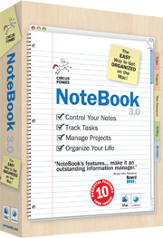
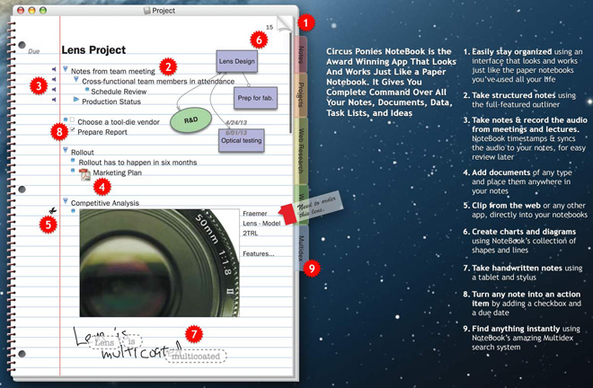

<div id="box">
<div class="t1">
  <div class="t">
    <div class="b">
      <div class="m">
        <div id="containerpop">
          <div align="right" id="closeBox"></div>
          <div class="app">
            <div class="icon"></div>
            <div class="desc2">
              <h1>Circus Ponies – NoteBook</h1>
              <h2>The Desktop Organizer That Suits You, Not Your Computer</h2>
              <p>With web clippings, Stickies, notes, and “to dos” scattered across your computer it’s hard to find those important bits of information when you really need them!  Now, with Circus Ponies’ <strong>NoteBook</strong> software you can organize myriad bits of information, from many different sources, in virtual paper notebooks, making them quick and easy to locate at any time. NoteBook’s interface is instantly familiar, intuitive and extremely flexible. From a single long page of notes to outlines for managing lists and much more, NoteBook works the way you do. Notebooks can contain and store whatever you need – and with everything in one place, staying organized is almost automatic!</p>
              <div class="price_sysr">
                <div class="l">
                  <div class="ItemPrice">$49.95
                    <div class="ITline"></div>
                  </div>
                  <div class="fullcontent ItemFull">Full Version</div>
                </div>
                <div class="r">
                  <div class="systemreq1">
                    <div class="systemreq">
                      <h1>System requirements:</h1>
                      <ul>
                        <li>Mac OS X 10.5.8 or later including Mac OS X 10.8 Mountain Lion</li>
                        <li>512MB of RAM</li>
                      </ul>
                      <h1>Product details:</h1>
                      <ul>
                        <li>By Circus Ponies</li>
                        <li>Version 3.1.7</li>
                        <li>Size: 46MB</li>
                      </ul>
                    </div>
                  </div>
                </div>
              </div>
            </div>
          </div>
          <div class="tabs_content"></div>
        </div>
      </div>
    </div>
  </div>
</div>
</div>
